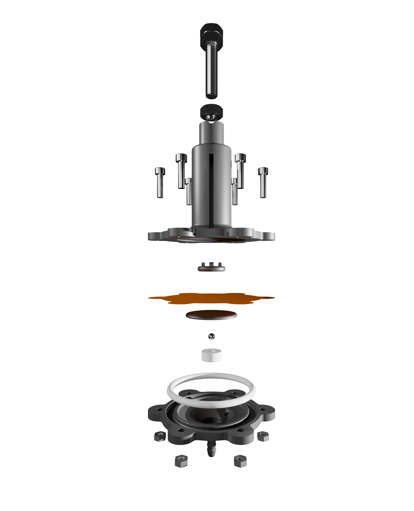

Miniature pressure-relief valve
A passive valve that vents a superpressure balloon above a set pressure and reseals as it falls.
- Problem
- At 1–6.5 kPa the valve has only a few newtons to work with, and it must stay light and seal in the cold.
- My contribution
- Sole mechanical engineer: concepts, CAD, SLA-printed prototypes, test method and software, ambient and cold testing, analysis and redesign.
- Outcome
- A diaphragm architecture that separates pressure sensing from sealing, with cracking pressure set by spring preload.
- Status
- Development prototype, characterised in air at ambient and cold temperatures; not yet qualified.
- Measured cracking range, set by spring preload
- 1.4–6.5kPa
- Measured repeatability, 8 cycles over 10 h at −25 °C
- ±0.9%
- Test-fitted vs calculated diaphragm area
- 2.4%
Engineering detail The design changeWhat testing showedStill open
The design change
The first concept was direct-acting: the same area collected the pressure and formed the seal, so a few newtons were spread over a large seal face and sealing depended on finish and lubricant. The diaphragm design separates the two: a Kapton diaphragm collects pressure over about 600 mm², and the plunger concentrates that force on a 3.175 mm steel ball on a machined PTFE seat.
What testing showed
Cracking pressure followed preload linearly across six settings at 28 °C. Replacing the Mylar diaphragm with Kapton reduced the fitted offset force from about 0.44 N to 0.084 N; the remainder may partly be a preload or assembly-reference error.
| Cold test (air) | Temperature | Result |
|---|---|---|
| Cracking vs preload, 6 settings | 28 °C and −20 °C | 32.7 % higher when cold, by a constant ratio |
| Repeatability, 8 cycles over 10 h | −25 °C | 3170 ± 29 Pa (±0.9 %) |
| Housing O-ring seal | ≈ −30 ± 3 °C | Leakage starts |
The force-balance fit attributes the cold rise to a smaller effective diaphragm area (599.5 → 451.8 mm²), not added friction; the physical cause is an untested hypothesis. The O-ring leak is a separate failure.
Still open
Relief capacity is about 900 sccm at 4–5 kPa (requirement above 2,000 sccm), mass is 27 g (target below 20 g), and the seal must reach the −60 °C design minimum. Helium, thermal-cycling, endurance and low-temperature qualification tests are planned.
